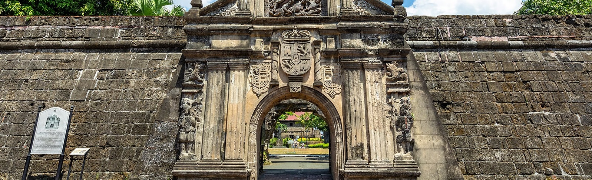
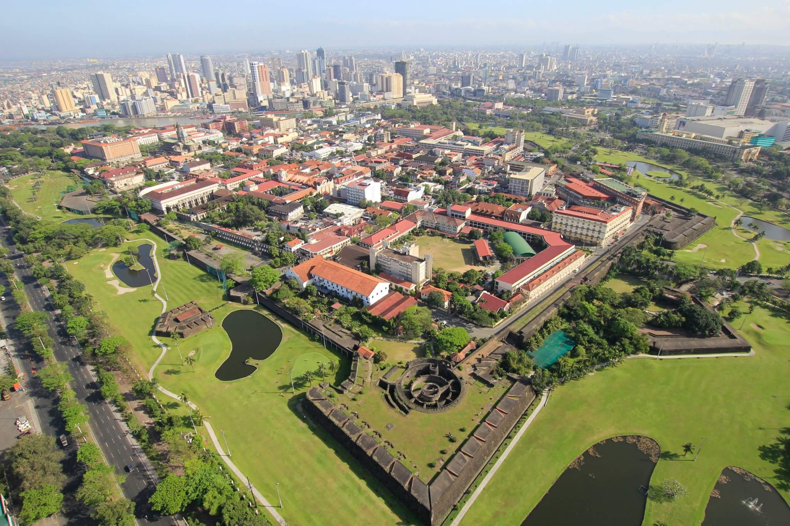

Intramuros, Manila
Manila is an exciting and vibrant city that is a thriving metropolis surrounded by centuries-old churches and colonial history. It is easy to walk around Manila on your own, or take a guided sightseeing tour of the oldest district, the Intramuros or walled city, where you'll find some of the most significant tourist attractions and important landmarks and monuments.

